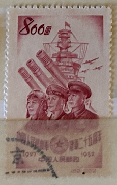
| SOURCE | TITLE| IMAGE MATCH | click to source page |
| HipStamp | China PRC - Scott 159 - Peoples Liberation Army-1952 - MNH - $0.50. | Asia - China, General Issue Stamp / HipStamp | 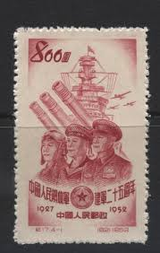 |
| eBay | Art, Artists Used Postage Chinese Stamps for sale | eBay | 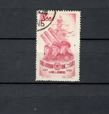 |
| deniscordonnier.com | 中国切手 人民解放軍建軍30周年 1957年 4種完【使用済】 中国 | 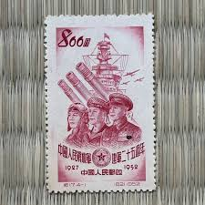 |
| eBay | C17 1952 25th anniversary of the founding of the People's Liberation Army XF | eBay |  |
| HipStamp | China (PRC) #159-62 Single (Complete Set) (Army) | Asia - Indo-China, General Issue Stamp / HipStamp | 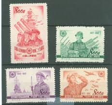 |
| eBay | 1952 C17, 25Th Anniversary of The Founding of The Army Scrawl Ticket No Glue | eBay |  |
| eBay | CHINA PRC 1952 25th ANNIVERSARY of the PEOPLEs LIBERATION ARMY -SC 159 MNH NGAI | eBay | 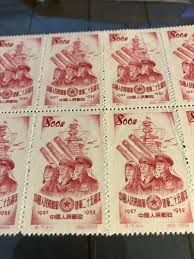 |
| Xabusiness.com | Military stamps of China | 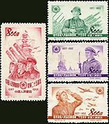 |
| eBay | China 1942- Mint never hinged stamp (MNH). Military nr.: 3.. (VG) MV-6233 | eBay |  |
| eBay | Pre-Decimal Mint No Gum/MNG Chinese Stamps for sale | eBay | 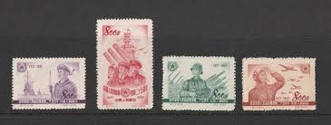 |
| HipStamp | China 1952 25Y Founding People Liberation Army Military Aviation Stamps See pic | Asia - China, Officials Stamp / HipStamp | 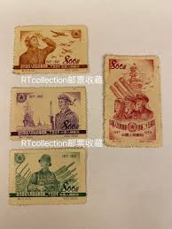 |
| On August 1, 1952, the anniversary of the founding of the Chinese People's Liberation Army, the Ministry of Posts and Telecommunications of the People's Republic of China issued a commemorative stamp set | 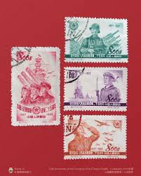 | |
| StampⅥ (@stamp66666) • Instagram photos and videos | 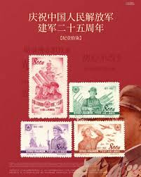 | |
| eBay | China 1952 C17, 25th Anniv. of Founding ofthe Chinese People's Liberation Army | eBay | 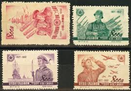 |
| Delcampe | Search in the "1915-1950 Local Issues > Southern-China 1949-50" category | Delcampe | 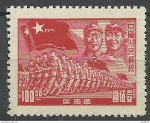 |
| Alamy | Princess diana green dress hi-res stock photography and images - Page 2 - Alamy | 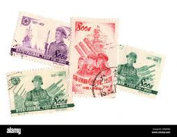 |
| eBay | PEOPLE'S REPUBLIC of CHINA 239 - Workers with Flag and Constitution (pb26179) | eBay | 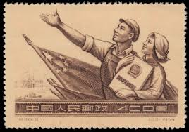 |
| Me i ask for this catalog value for this ... i can see them.. | 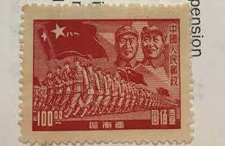 | |
| Does damage to bottom right corner decrease value much? : r/stamps | 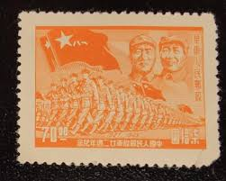 | |
| Alamy | Postage stamps from china hi-res stock photography and images - Alamy | 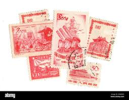 |
| Old Chinese postage stamp with Mao and the Red Army marching Stock Photo - Alamy | 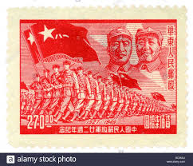 | |
| eBay | P.R. CHINA 160 - People's Liberation Army 25th Anniversary (pb24624) | eBay | 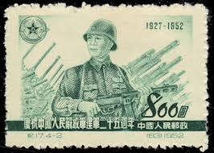 |
| eBay | Military, War Red Chinese Stamps for sale | eBay | 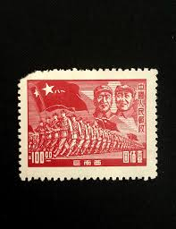 |
| Alamy | Bermuda building hi-res stock photography and images - Alamy | 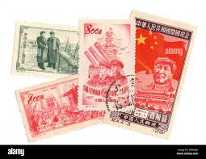 |
| eBay | Military, War Used Postage Chinese Stamps for sale | eBay | 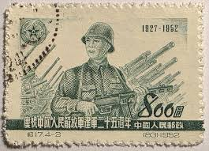 |
| eBay | China 1949- South West China -Mint stamp without gum. Mi Nr.: 57. (VG) MV-12642 | eBay | 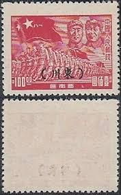 |
| Xabusiness.com | 1954 China Stamps | 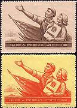 |
| eBay | China Zhu De, Mao Tse-tung and Troops Stamps Briefmarken Sellos Timbres | eBay | 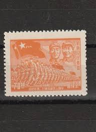 |
| eBay | SW. China. SW5. $100. 西南区人民解放军图票 Unused. NH. 1949 | eBay | 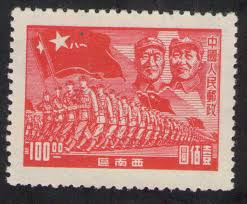 |
| Carousell | China special stamps-25 Anniversay of People's Liberation Army (1952)commemorative stamps issue, Hobbies & Toys, Memorabilia & Collectibles, Stamps & Prints on Carousell | 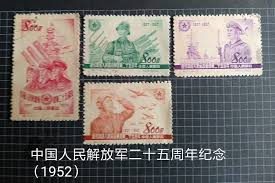 |
| eBay | Red Chinese Stamps without Gum for sale | eBay | 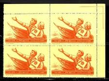 |
| eBay | China 1949 - East China (China liberada do Leste) - (Sc 5L 77 A7) | eBay | 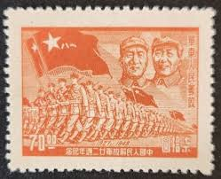 |
| eBay | China C30 Constitution of PRC Set of 2v - Used (SL245) | eBay | 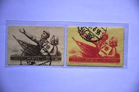 |
| Find Your Stamps Value | 25th anniversary of People's Liberation Army: Sailor & warships - 中国人民解放军：建军二十五周年：水手和战舰$800 Purple stamp price, value | 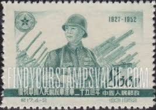 |
| eBay | China C30 Constitution of PRC Set of 2v - Used (SL195) | eBay | 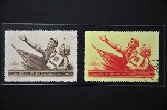 |
| Shutterstock | 3+ Thousand Beijing Stamp Royalty-Free Images, Stock Photos & Pictures | Shutterstock | 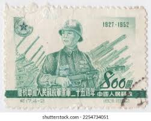 |
| eBay | China Stamps -中国邮票-中国宪法- 1954, C30, Scott 239-40, F-VF | eBay | 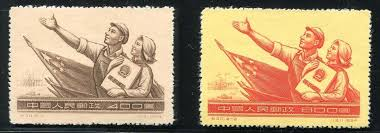 |
| PicClick | VINTAGE MATCHBOX LABEL Vietnam rare lot of 6 labels - 3cm. x 4,5cm. $60.00 - PicClick | 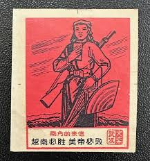 |
| eBay | Rare Chinese stamp Mi:CN-SW 12 Southwest China R! | eBay |  |
| Russian Philately | 1938 Sc 496 V. I. Chapaev with machine-guner Scott 635 for sale at Russian Philately | 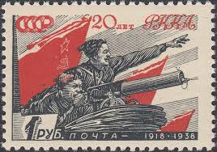 |
| Shutterstock | China Circa 1957 Stamp Printed China Stock Photo 40257172 | Shutterstock | 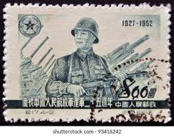 |
| angelapelletterie.com | China Postage Stamps People's Republic Of China 2000 Legend Of Mulan Stamps Collection - Complete Set FDC For Philately Enthusiasts Prophila Collection Stamps | 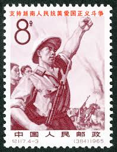 |
| ALEADO.COM | China stamp .. war hour stamp Chinese People's Liberation Army two 10 anniversary commemoration 5 kind . unused . higashi district 1949 year issue antique : Real Yahoo auction salling | 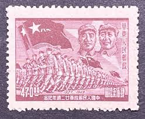 |
| Xabusiness.com | C27 Scott 231-233 1st Anniv. of Death of J.V. Stalin - China Stamps | 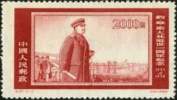 |
| HipStamp | East China 1949 - $70 22nd ann of People's Liberation Army - SGEC378 unused | Asia - China, General Issue Stamp / HipStamp | 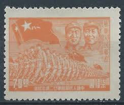 |
| Stamp Auction Network | Prices Realized | 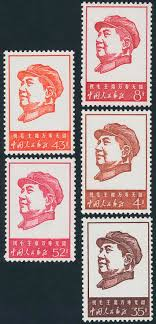 |
| eBay | Russia 1938 old Red Army stamp (Michel 594) nice MNH in block of four | eBay | 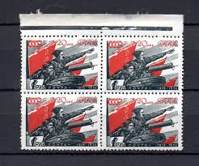 |
| eBay | Russia Vladivostok Local Overprint and Surcharge War Ship on 1994 Air Mail Cover | eBay | 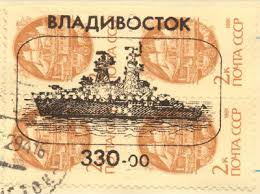 |
| Shutterstock | Old Postage Stamp Stock Photo 14986201 | Shutterstock | 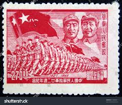 |
| HipStamp | China Stamp: 1949-Sc#8L5-Mao & Zhuteh Troops South West USE -Mint Stamp | Asia - China, Locals & Carriers Stamp / HipStamp | 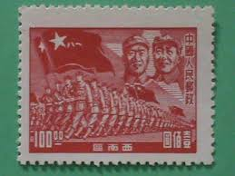 |
| PicClick | PR CHINA 1958 S29 Sc#394-97 Sports-Aviation Publicity Stamps. MNH. NGAI. $14.00 - PicClick | 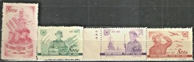 |
| eBay | Cancelled to Order/CTO Flags, National Emblems Stamps for sale | eBay | 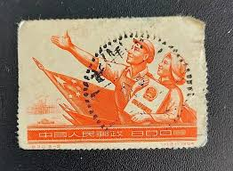 |
| stamps-plus.com | Stamps Plus | China Peoples Republic | 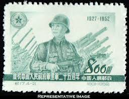 |
| Dreamstime.com | CHINA - CIRCA 1949: a Stamp Printed in China Shows General Chu Teh, Mao Zedong and Troops, Circa 1949. Editorial Stock Photo - Image of chinese, estampilla: 237547963 | |
| Shutterstock | China Circa 1949 Stamp Printed By Stock Photo 72891211 | Shutterstock | |
| Japan, 1935 : : 6 sen : : third in a series of four stamps commemorating the [1935] visit [to Japan] of Emperor Kang Teh of Manchukuo. | ||
| when my uncle died a few years ago, no one wanted to take over the collection. My aunt said he talked a lot about his collection in the last days of his | ||
| eBay | RUSSIA 635 MINT HINGED OG * NO FAULTS VERY FINE! - TYG | eBay | |
| HipStamp | China-1950-Sc#8L43A- 72 Years Old-22Nd Anniversary of Liberation Army Mint VF | Asia - China, Locals & Carriers Stamp / HipStamp |